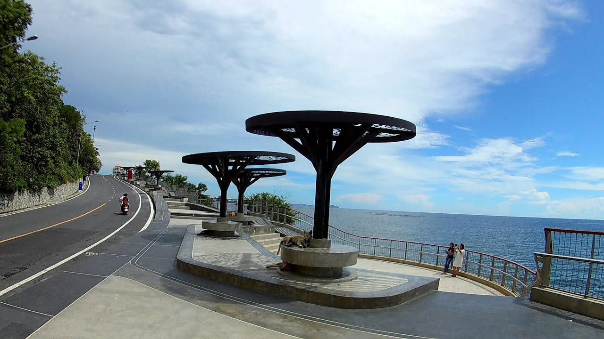

สถานที่ท่องเที่ยวทางธรรมชาติ
ดูทั้งหมด

เขาสามมุก
เขาสามมุข เป็นจุดท่องเที่ยวที่มีชื่อเสียงควบคู่กับหาดบางแสน เป็นทั้งที่ตั้งของศาลเจ้าแม่สามมุขอันศักดิ์สิทธิ์ และเป็นจุดชมวิบนยอดเขาสูงที่มีฝูงลิงอาศัยอยู่จำนวนมาก นักท่องเที่ยวส่วนใหญ่ที่ไปเล่นน้ำที่หาดบางแสน ก่อนกลับบ้าน มักจะแวะเที่ยวที่นี่เช่นกัน

พิพิธภัณฑ์สัตว์น้ำ
ภายใน อควาเรียมบางแสน หรือ พิพิธภัณฑ์สัตว์น้ำ บางแสน คุณจะได้พบกับสัตว์น้ำนานาพันธุ์ที่จัดโซนการแสดงออกมาได้อย่างสวยงาม ทั้งปลาทะเลสีสันสดใส และปะการังที่หาชมยาก และที่ถือเป็นไฮไลท์ของ อควาเรียมบางแสน เลยก็คือแมงกะพรุนที่ทางอควาเรียมจัดแสดงโดยใช้แสงสีเข้ามาช่วย ทำให้ตัวแมงกะพรุนนั้นเหมือนเรืองแสงได้ด้วยตัวเอง